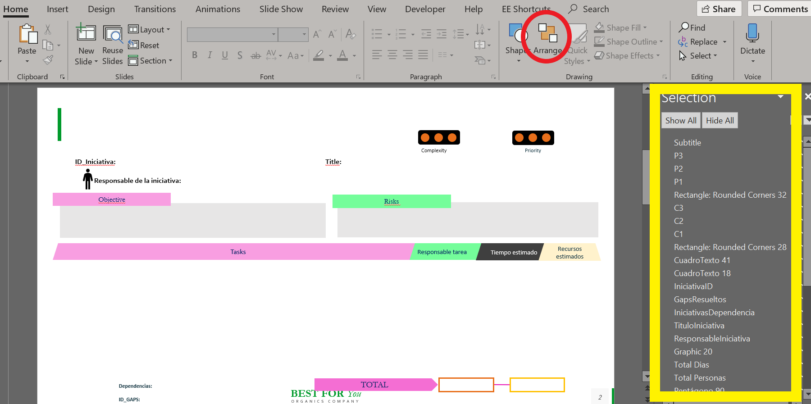

The aim of this post is to explain how power point slides can be generated using R. To do this, we will start from an Excel file where each row will correspond to a slide, a power point template and, of course, R.
You can download the different files from these links.
First, let’s load the necessary R packages as well as the example we will analyze in this post.
require(officer)
require(xml2)
require(readxl)
require(dplyr)
require(PtxGenerator) # devtools::install_github('puigjos/PtxGenerator')
dt_tasks = readxl::read_excel('Example.xlsx', sheet = 'Tasks')
dt_initiatives = readxl::read_excel('Example.xlsx', sheet = 'Initiatives')The main idea is to use the flexibility of R to generate slides in an automated way. To do this, we use a power point template where we will identify the names of the different figures in the template where we will embed the information from Excel. It is shown in the following figure:

To access this panel is through Arrange -> Selection Pane (red circle in the figure). As you can see, the selection pane shows the different objects/figures that the slide has.
Next, we will generate a slide from a row of excel:
style_subtitle = officer::fp_text(font.size = 16, bold = T,
font.family = 'ubuntu')
style_ID = officer::fp_text(font.size = 12, bold = F,
font.family = 'ubuntu (Body)')
style_text = officer::fp_text(font.size = 10, bold = F,
font.family = 'ubuntu (Body)')general_path = 'DocExamp.pptx'
my_general <- officer::read_pptx(general_path)file_template = 'Template.pptx'
my_pres <- officer::read_pptx(path = file_template)
slide_1 = dt_initiatives[1, ]# Title
my_pres <- officer::ph_with(my_pres, value = slide_1$Category,
location = officer::ph_location_type(type = "title"))
# Subtitle
my_pres <- officer::ph_add_text(my_pres, str = slide_1$SubCategory, pos = 'before',
style = style_subtitle,
ph_label = 'Subtitle')
## Iniciativa ID
my_pres <- officer::ph_add_text(my_pres, str = slide_1$ID_Iniciativa,
pos = 'before',
style = style_ID,
ph_label = 'IniciativaID')
## ResponsableIniciativa
my_pres <- officer::ph_add_text(my_pres, str = slide_1$Responsable,
pos = 'before',
style = style_ID,
ph_label = 'ResponsableIniciativa')
## Título
my_pres <- officer::ph_add_text(my_pres, str = slide_1$`Título de la inciativa`,
pos = 'before',
style = style_ID,
ph_label = 'TituloIniciativa')
# Objetivo
my_pres <- officer::ph_add_text(my_pres, str = slide_1$Objective,
pos = 'before',
style = style_text,
ph_label = 'ObjetivoIniciativa')
# Riesgos
my_pres <- officer::ph_add_text(my_pres, str = slide_1$Risks,
pos = 'before',
style = style_text,
ph_label = 'RiesgosIniciativa')
# GAPs resueltos
my_pres <- officer::ph_add_text(my_pres, str = gsub('\r\n', ', ', slide_1$ID_GAPS),
pos = 'before',
style = style_text,
ph_label = 'GapsResueltos')tmp <- dt_tasks %>%
dplyr::filter(ID_Iniciativa == slide_1$ID_Iniciativa)
tmp_flex <- tmp %>%
dplyr::select(Tareas, `Responsable tarea`, `Tiempo estimado`, `Recursos estimados`) %>%
flextable::flextable() %>%
flextable::bg(bg = "#e7e6e6", part = "all") %>%
flextable::delete_part(part = 'header') %>%
flextable::width(j=1, width = 8.062992126) %>%
flextable::width(j=2, width = 1.645669291) %>%
flextable::width(j=3, width = 1.42519685) %>%
flextable::width(j=4, width = 1.291338583) %>%
flextable::align(j = 1, align = 'left') %>%
flextable::align(j = 2:4, align = 'center') %>%
flextable::valign(valign = "center", part = "body") %>%
flextable::font(fontname = "Ubuntu (Body)") %>%
flextable::fontsize(j = 1, size = 9) %>%
flextable::fontsize(j = 2:4, size = 10) %>%
flextable::border_remove() %>%
flextable::border_inner(border = officer::fp_border(color="white"))
my_pres <- officer::ph_with(my_pres, value = tmp_flex,
location = officer::ph_location(left = 0.5393700787,
top = 3.980314961))#### total personas
tot_pers = PtxGenerator::split_function(tmp$`Recursos estimados`, 'p')
to_pers <- paste0(sum(tot_pers$V1), 'p - ', sum(tot_pers$V2), 'p')
my_pres <- officer::ph_add_text(my_pres, str = to_pers,
pos = 'before',
style = style_text,
ph_label = 'Total Personas')colors <- c('ff3300', 'ffe600', '00f53d')
# Complexity
slide = my_pres$slide$get_slide(1)
slide <- PtxGenerator::figure_number(slide, GeneralName = 'C', colors = colors,
blank_colors = 'd4d2d4',
number = slide_1$Complexity, allnumber = F)
# Priority
slide <- PtxGenerator::figure_number(slide, GeneralName = 'P', colors = colors,
blank_colors = 'd4d2d4',
number = slide_1$Priority, allnumber = F)my_pres$slide$save_slides()
PtxGenerator::append_slide(x = my_general,
slide = my_pres$slide$get_slide(1),
media_copy = T) # we use media_copy = T if there are icons or images
final_file = 'final_slides.pptx'
print(my_general, target = final_file)The result is awsome! here
If when adding a slide the argument media_copy = T has been used in the append_slide function, then power point will report an error. Such an error can be simply ingested with a “save as”.
To generate several slides what you would have to do is put all the previous code within a function, and then use a loop to generate the slides:
gen_slide_initiatives <- function(slide_1, file_template, dt_tasks){
################################# styles ################################
style_subtitle = officer::fp_text(font.size = 16, bold = T,
font.family = 'ubuntu')
style_ID = officer::fp_text(font.size = 12, bold = F,
font.family = 'ubuntu (Body)')
style_text = officer::fp_text(font.size = 10, bold = F,
font.family = 'ubuntu (Body)')
################################# start #################################
my_pres <- officer::read_pptx(path = file_template) %>%
PtxGenerator::select_slides(index = 1)
# Title
my_pres <- officer::ph_with(my_pres, value = slide_1$Category,
location = officer::ph_location_type(type = "title"))
# Subtitle
my_pres <- officer::ph_add_text(my_pres, str = slide_1$SubCategory, pos = 'before',
style = style_subtitle,
ph_label = 'Subtitle')
## Iniciativa ID
my_pres <- officer::ph_add_text(my_pres, str = slide_1$ID_Iniciativa,
pos = 'before',
style = style_ID,
ph_label = 'IniciativaID')
## ResponsableIniciativa
my_pres <- officer::ph_add_text(my_pres, str = slide_1$Responsable,
pos = 'before',
style = style_ID,
ph_label = 'ResponsableIniciativa')
## Título
my_pres <- officer::ph_add_text(my_pres, str = slide_1$`Título de la inciativa`,
pos = 'before',
style = style_ID,
ph_label = 'TituloIniciativa')
# Objetivo
my_pres <- officer::ph_add_text(my_pres, str = slide_1$Objective,
pos = 'before',
style = style_text,
ph_label = 'ObjetivoIniciativa')
# Riesgos
my_pres <- officer::ph_add_text(my_pres, str = slide_1$Risks,
pos = 'before',
style = style_text,
ph_label = 'RiesgosIniciativa')
# GAPs resueltos
my_pres <- officer::ph_add_text(my_pres, str = gsub('\r\n', ', ', slide_1$ID_GAPS),
pos = 'before',
style = style_text,
ph_label = 'GapsResueltos')
# Tareas
tmp <- dt_tasks %>%
dplyr::filter(ID_Iniciativa == slide_1$ID_Iniciativa)
tmp_flex <- tmp %>%
dplyr::select(Tareas, `Responsable tarea`, `Tiempo estimado`, `Recursos estimados`) %>%
flextable::flextable() %>%
flextable::bg(bg = "#e7e6e6", part = "all") %>%
flextable::delete_part(part = 'header') %>%
flextable::width(j=1, width = 8.062992126) %>%
flextable::width(j=2, width = 1.645669291) %>%
flextable::width(j=3, width = 1.42519685) %>%
flextable::width(j=4, width = 1.291338583) %>%
flextable::align(j = 1, align = 'left') %>%
flextable::align(j = 2:4, align = 'center') %>%
flextable::valign(valign = "center", part = "body") %>%
flextable::font(fontname = "Ubuntu (Body)") %>%
flextable::fontsize(j = 1, size = 9) %>%
flextable::fontsize(j = 2:4, size = 10) %>%
flextable::border_remove() %>%
flextable::border_inner(border = officer::fp_border(color="white"))
my_pres <- officer::ph_with(my_pres, value = tmp_flex,
location = officer::ph_location(left = 0.5393700787,
top = 3.980314961))
#### total personas
tot_pers <- PtxGenerator::split_function(tmp$`Recursos estimados`, 'p')
tot_pers <- paste0(sum(tot_pers$V1), 'p - ', sum(tot_pers$V2), 'p')
# Dependencias
my_pres <- officer::ph_add_text(my_pres, str = tot_pers,
pos = 'before',
style = style_text,
ph_label = 'Total Personas')
colors <- c('ff3300', 'ffe600', '00f53d')
# Complejidad
slide = my_pres$slide$get_slide(1)
slide <- PtxGenerator::figure_number(slide, GeneralName = 'C', colors = colors,
blank_colors = 'd4d2d4',
number = slide_1$Complexity, allnumber = F)
# Prioridad
slide <- PtxGenerator::figure_number(slide, GeneralName = 'P', colors = colors,
blank_colors = 'd4d2d4',
number = slide_1$Priority, allnumber = F)
my_pres$slide$save_slides()
return(my_pres)
}As I mentioned, using the above function within a loop.
my_general <- officer::read_pptx(general_path)
for(i in 1:6){
my_pres = gen_slide_initiatives(slide_1 = dt_initiatives[i, ],
file_template = file_template,
dt_tasks = dt_tasks)
PtxGenerator::append_slide(x = my_general,
slide = my_pres$slide$get_slide(1),
media_copy = T)
}
final_file = 'all_final_slides.pptx'
print(my_general, target = final_file)This is the result! here
Some tips and things that you can do: